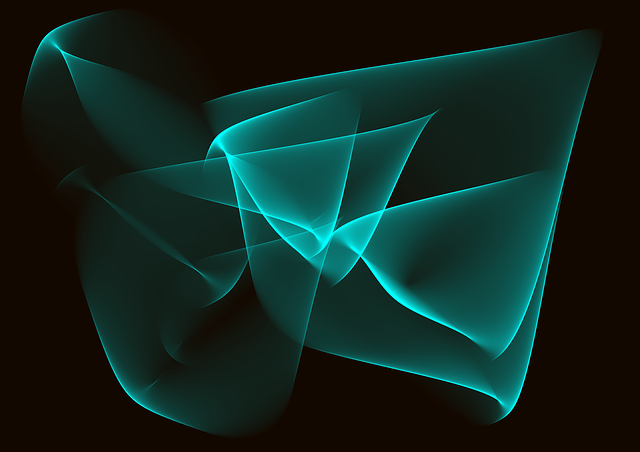
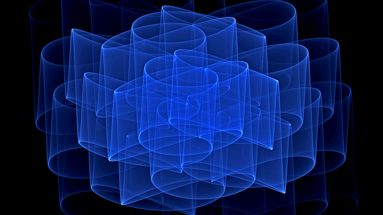
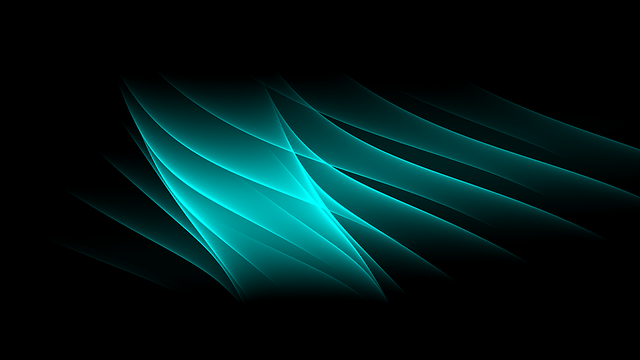
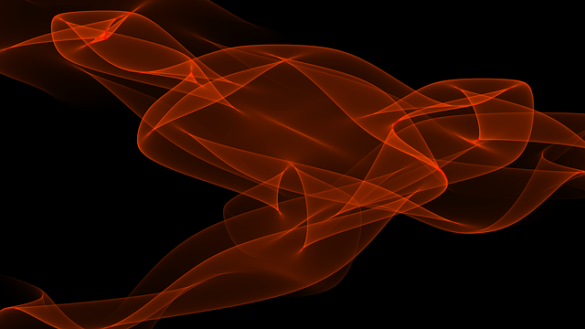
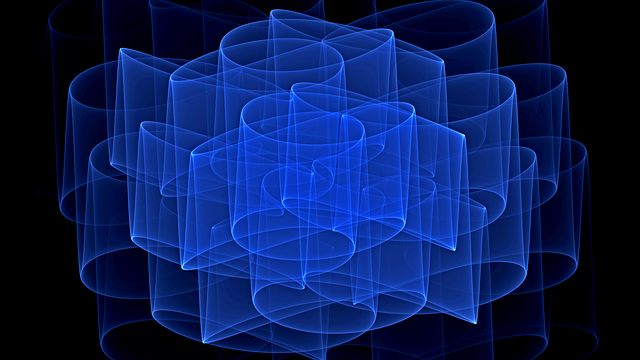
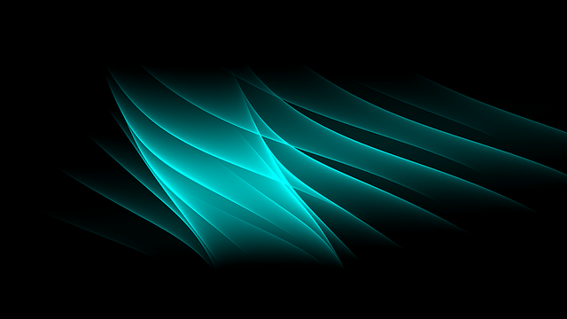
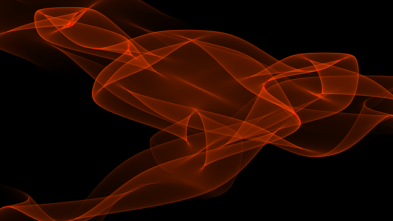
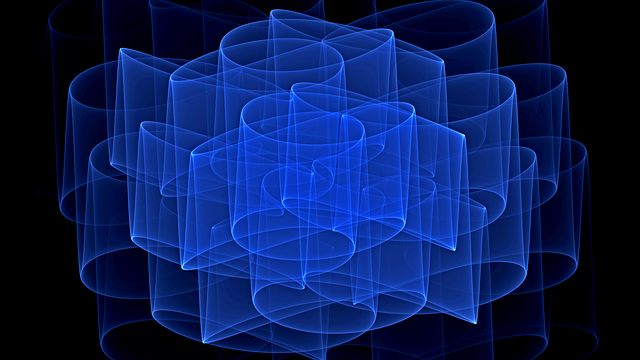
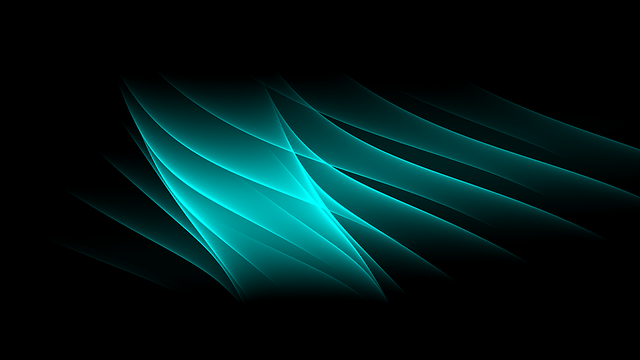
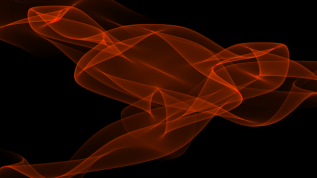

Task 1
Створити массив шляхів до зображень і створити слайдер який переключає кожні 3 секунди картинку, слайдер повинен бути зациклений, коли доходить до кінця массиву починає показувати зображення з початку. Анімації і ефекти до слайдеру по бажанню
Result



 







